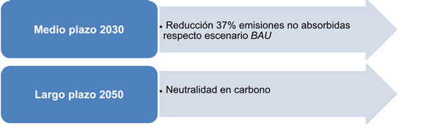
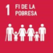
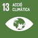
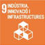

CONTRIBUCIÓN DETERMINADA A NIVELNACIONAL DE ANDORRA
1ra NDC: 24/3/2017
Actualización 2020
PREÁMBULO
El 2 de marzo del 2011 Andorra se adhirió al Convenio Marco de Naciones Unidas sobre el Cambio Climático (CMNUCC) como Parte no incluida en el anexo I (nonAnnex I).
Durante la decimonovena sesión de la Conferencia de las Partes (COP) celebrada en Varsovia (2013), se adoptó la decisión 1 / CP.19, titulada Medios para continuar con la implementación de la plataforma Durban, que establece en el párrafo 2, punto b, que en el vigésimo primer período de sesiones (en diciembre de 2015), se adoptaría un protocolo, instrumento jurídico o un texto mutuamente acordado con valor jurídico, elaborado de conformidad con el CMNUCC y aplicable a todas las Partes. Para que este instrumento entrara en vigor y se aplicara a partir de 2020, invitaba a todas las Partes a iniciar o ampliar los preparativos internos para elaborar sus contribuciones esperadas determinadas a nivel nacional (INDC), sin perjuicio de la naturaleza jurídica de dichas contribuciones, con miras a la adopción de un protocolo, otro instrumento legal o un texto mutuamente acordado que tuviera valor legal, elaborado bajo el CMNUCC y aplicable a todas las Partes. Esto, con vista a lograr el objetivo del Convenio establecido en el artículo 2, y comunicarlo mucho antes del 21° período de sesiones de la Conferencia de las Partes (primer trimestre de 2015 para las Partes que estén listas para hacerlo) para mejorar la claridad, la transparencia y la comprensión de las contribuciones planificadas, sin perjuicio de la naturaleza legal de dichas contribuciones.
En 2014 todas la Partes fueron invitadas a comunicar su primera NDC antes de la COP21, durante el primer trimestre de 2015, de manera clara, transparente y comprensible (párrafo 13 de la decisión 1/CP.20 de la 20ena Conferencia de las Partes, Lima).
Andorra fue una de las Partes pioneras en comunicar su INDC en 2015, según la cual el compromiso era reducir las emisiones de GEI en un 37% respecto al escenario Bussines as usual (BAU), 530,55 Gg CO2 eq.), para el año 2030.
Durante la negociación de la COP21 (diciembre de 2015), las Partes adoptaron la decisión 1 / CP.21, que propone una nueva estrategia y se convierte en un instrumento necesario para la implementación de los procesos relacionados con la lucha contra el cambio climático, el Acuerdo de París. Este nuevo acuerdo, firmado por Andorra el 22 de abril de 2016 y ratificado por el parlamento andorrano por unanimidad el 30 de noviembre de 2016, se ha convertido en un instrumento legal universal.
Las contribuciones determinadas a nivel nacional (NDC) son el núcleo del Acuerdo de París y han de permitir la consecución de los objetivos a largo plazo, tanto para reducir las emisiones nacionales como para adaptarse a los efectos del cambio climático. El artículo 4, párrafo 2 y 9 de este Acuerdo prevé que cada Parte prepare, comunique y mantenga sus NDC, y que esta comunicación se realice cada 5 años.
En este sentido, con la firma del Acuerdo de París, Andorra debe informar cada cinco años sobre sus contribuciones determinadas a nivel nacional (NDC) para reducir sus emisiones de gases de efecto invernadero, siendo este año 2020 la primera actualización de nuestra NDC.
En el décimo Informe sobre la disparidad en las emisiones de ONU-Medio Ambiente (2019) se evalúan los últimos estudios científicos sobre las emisiones actuales y futuras estimadas de GEI, en el que se comparan con los niveles de emisiones admisibles para que el mundo progrese en la trayectoria de menor coste hacia la consecución de los objetivos del Acuerdo de París. Durante la Cumbre Mundial sobre la Acción Climática, que tuvo lugar durante la semana de la Asamblea General de las Naciones Unidas en septiembre de 2019, se marcó como objetivo promover la adopción de medidas y, sobre todo, hacer lo posible para que los países contrajeran la obligación de incrementar sus CDN en 2020 y se propusieran alcanzar las cero emisiones netas antes de 2050. Durante dicha Cumbre, Andorra mostró su compromiso con estos objetivos mediante la presentación de las diferentes acciones que nuestro país pretende establecer para reducir las emisiones de gases de efecto invernadero de aquí a 2030 y también para alcanzar la neutralidad de las emisiones de gases de efecto invernadero de aquí a 2050.
Asimismo, el 23 de enero de 2020 el Parlamento de Andorra aprobó la Declaración del estado de emergencia climática y ecológica, elaborada con participación activa de los jóvenes, la cual solicita al Gobierno que impulse la transición hacia la neutralidad en carbono de acuerdo con el Objetivo de desarrollo sostenible 13 (Acción por el clima).
Por todo ello, este año 2020 es una oportunidad para el proceso de lucha frente al cambio climático porque las Partes actualizamos nuestras NDC, manteniendo y reforzando el compromiso y planificando las estrategias de desarrollo a largo plazo para reducir nuestras emisiones de GEI, teniendo en cuenta que el Acuerdo de París nos compromete a aproximarnos al máximo a la limitación del incremento de temperatura global por debajo de 1,5ºC a finales del siglo XXI.
En este sentido, y mediante el presente documento, Andorra comunica sus contribuciones determinadas en 2020 a nivel nacional de acuerdo con la decisión 1/CP.21.
|
Circunstancias nacionales
Andorra es un país pequeño (468 Km2) y montañoso (ubicado en los Pirineos, entre Francia y España, con una población de 77.543 habitantes (2019).
Debido a su ubicación en medo de la cordillera montañosa de los Pirineos, es un terreno accidentado, con una altura promedia de 2.044 metros (la altura mínima del país está a 850 m en el valle del río Valira, y la altura máxima es de 2.942 m en la cima de Coma Pedrosa). Las aguas del país cruzan la frontera con Francia y España, y alimentan dos grandes cuencas de drenaje europeas: el Ebro, en el sur, y el Garona, en el norte.
Después de un período de deforestación a fines del siglo XIX y principios del XX, los bosques recuperaron tierras de los prados y praderas abandonadas, y en la actualidad aproximadamente un 39% del territorio del país está cubierto por masa forestal, mientras que las infraestructuras y las zonas urbanas ocupan sólo un 1,7% del territorio.
El clima de Andorra es un clima de montaña húmedo de latitud media con influencia mediterránea en la zona sur, que se caracteriza por un clima mediterráneo continental. Este clima confiere al país una rica biodiversidad con las condiciones necesarias para adaptarse a una amplia gama de hábitats diferentes que albergan una gran cantidad de seres vivos, algunos de ellos especies únicas o incluso endémicas. Las temperaturas evolucionan de acuerdo a la temperatura de las zonas del hemisferio norte, con un promedio anual de 5,36ºC. La precipitación media es de alrededor de 950 mm / año (19502017). Este clima ya ha evolucionado, con una tendencia en los últimos 30 años, de aproximadamente un aumento de + 0,13ºC / década en las temperaturas promedio (cambio más pronunciado en la primavera), y una reducción de al menos -43 mm / década en precipitaciones anuales (con las disminuciones más pronunciadas en otoño e invierno) (1950-2017).
Estas variaciones climáticas tendrán consecuencias sobre los diferentes ecosistemas, pero también sobre sus habitantes y las actividades económicas que se desarrollan.
La economía andorrana se centra principalmente en actividades terciarias. Los servicios son el sector más importante de la economía del Principado: 86,1% de las empresas y el 87,7% de los empleados. El sector financiero tiene un papel importante como motor de este sector y representa un 19,6% del PIB, según cifras de 2017. El turismo es uno de los pilares fundamentales de la economía andorrana, directa o indirectamente responsable del 60% del PIB con aproximadamente 8 millones de visitantes al año. En invierno, predominan los productos relacionados con el esquí con 2,51 millones de días de esquí vendidos (temporada 2017-2018) distribuidos en más de 3.200 hectáreas de superficie esquiable. El sector de la nieve es el pilar de 2.000 puestos de trabajo, pero es muy vulnerable a los cambios climáticos y al aumento de los precios de los hidrocarburos, dado que las redes de carreteras son el único vínculo de hoy en día con los países vecinos.
El sector agrícola, basado en un sistema tradicional de gestión agrícola y ganadería extensiva que garantiza un equilibrio sostenible entre la ganadería y el uso agrícola, sólo representa un 0,54% del PIB del país (2017), pero desempeña un papel importante al proporcionar una gran cantidad de servicios ambientales, particularmente en la conservación del paisaje y el control de seguridad contra incendios. El sector industrial es muy limitado a nivel de país (5,1% del PIB en 2017).
En cuanto al sector energético, Andorra depende en gran medida de los combustibles fósiles y la energía eléctrica importada. El 76% de la energía total consumida en el país depende de los combustibles fósiles (totalmente importados). La electricidad consumida en Andorra (alrededor de 600 GWh / año) se importa principalmente de Francia y España. La producción nacional alcanzó el 18,5% en 2017 (producida a partir de fuentes de energías renovables y la valorización energética de residuos).
|
PRINCIPIOS RECTORES DE LA POLÍTICA CLIMÁTICA
La política de lucha contra el cambio climático que condiciona la normativa y la estrategia climática nacional se basa en cuatro principios rectores que son integrados en cualquier normativa, proyecto o acción climática que desarrolla la política climática del país. Con esta voluntad en septiembre de 2018 el Parlamento andorrano aprobó por unanimidad la Ley 21/2018, de impulso de la transición energética y de lucha contra el cambio climático, que recoge estos principios en su capítulo primero.
 Con posterioridad, el 17 de abril del 2019, el Consejo de Ministros de Andorra aprobó el Plan estratégico nacional para la implementación de la Agenda 2030 para el desarrollo sostenible de las Naciones Unidas, que complementa estos objetivos establecidos en la normativa climática nacional.
Con posterioridad, el 17 de abril del 2019, el Consejo de Ministros de Andorra aprobó el Plan estratégico nacional para la implementación de la Agenda 2030 para el desarrollo sostenible de las Naciones Unidas, que complementa estos objetivos establecidos en la normativa climática nacional.
El conjunto de estos principios y objetivos globales representan también una oportunidad para el desarrollo de una nueva economía, con la creación de nuevos tipos de empleo y de nuevas tecnologías.
Estos principios son:
 Sostenibilidad: las acciones que de desarrollan satisfacen las necesidades de la generación actual, sin comprometer la capacidad para satisfacer las necesidades de las generaciones futuras, aplicándolo en el sentido más amplio y en todo tipo de aspectos en los ámbitos sociales, ambientales y económicos. En las acciones del sector energético, concretamente se priorizan las energías de fuentes renovables, la reducción de la demanda energética, la eficiencia energética y la reducción de las emisiones globales de GEI que provienen de este sector.
Sostenibilidad: las acciones que de desarrollan satisfacen las necesidades de la generación actual, sin comprometer la capacidad para satisfacer las necesidades de las generaciones futuras, aplicándolo en el sentido más amplio y en todo tipo de aspectos en los ámbitos sociales, ambientales y económicos. En las acciones del sector energético, concretamente se priorizan las energías de fuentes renovables, la reducción de la demanda energética, la eficiencia energética y la reducción de las emisiones globales de GEI que provienen de este sector.
 Protección e información: facilitar información comprensible para los ciudadanos que permita tomar decisiones y hábitos de consumo conscientes. La participación de los ciudadanos y agentes implicados en la elaboración de las estrategias climáticas también es un aspecto clave. Para asegurar esta participación efectiva, la ciudadanía recibe la información necesaria de manera transparente. Para ello, la Ley 21/2018, de impulso de la transición energética y de lucha contra el cambio climático, crea la Comisión Nacional de Energía y Cambio climático, configurada por diferentes actores del sector, privados y públicos, jóvenes, tercer sector, etc. que participa activamente en la Estrategia energética nacional y de lucha contra el cambio climático. La protección de los ciudadanos pasa por generar equidad territorial, un repartimiento justo de los costes y una calidad y garantía de los servicios, especialmente los energéticos.
Protección e información: facilitar información comprensible para los ciudadanos que permita tomar decisiones y hábitos de consumo conscientes. La participación de los ciudadanos y agentes implicados en la elaboración de las estrategias climáticas también es un aspecto clave. Para asegurar esta participación efectiva, la ciudadanía recibe la información necesaria de manera transparente. Para ello, la Ley 21/2018, de impulso de la transición energética y de lucha contra el cambio climático, crea la Comisión Nacional de Energía y Cambio climático, configurada por diferentes actores del sector, privados y públicos, jóvenes, tercer sector, etc. que participa activamente en la Estrategia energética nacional y de lucha contra el cambio climático. La protección de los ciudadanos pasa por generar equidad territorial, un repartimiento justo de los costes y una calidad y garantía de los servicios, especialmente los energéticos.
Crecimiento económico: el fomento de actividades económicas con un alto valor añadido se lleva a cabo a través de la aplicación de las mejores técnicas disponibles para crear nuevas posibilidades de mercado o negocio. La utilización de la mejor tecnología disponible evita, o al menos reduce al máximo, las emisiones y el impacto en el conjunto del medio ambiente.
 Soberanía y diversificación: para fomentar la resiliencia del país frente los cambios que se produzcan se incrementa la soberanía y se diversifican los diferentes sectores económicos. Concretamente, en el sector energético se incrementa la producción energética nacional, para reducir los riesgos frente a los cambios en el mercado.
Soberanía y diversificación: para fomentar la resiliencia del país frente los cambios que se produzcan se incrementa la soberanía y se diversifican los diferentes sectores económicos. Concretamente, en el sector energético se incrementa la producción energética nacional, para reducir los riesgos frente a los cambios en el mercado.
La Estrategia energética nacional y de lucha contra el cambio climático, la cual consta de 5 programas de acción y de 17 actividades, es la herramienta o hoja de ruta para alcanzar la neutralidad; desarrollar un plan de adaptación al cambio climático para hacer frente a la situación actual y prevista en el futuro; estructurar un sistema de financiación para llevar a cabo las acciones previstas; sensibilizar, educar y formar a la población; desarrollar tareas de investigación e innovación indispensables para entender y responder a los nuevos retos ambientales y tecnológicos.
Las acciones que recoge la estrategia se dirigen a sectores concretos como el de la energía, la movilidad, la agricultura y la gestión de residuos, entre otros, así como a diferentes sectores para tratar temas más transversales como la promoción de la economía circular, los cambios en nuestros hábitos de consumo, la aplicación de soluciones basadas en la naturaleza, el fomento de la investigación en estos ámbitos y la inclusión de nuevos conceptos en la educación del conjunto de la ciudadanía.
El conjunto de estas acciones sigue siempre los principios rectores comentados anteriormente, y cuenta con la participación de la Comisión Nacional de Energía y Cambio climático. Este documento se revisa como mínimo cada 6 años, de manera que recogerá los compromisos de los nuevos NDC presentados en el futuro, siendo ambos documentos retroalimentados y revisados periódicamente según los acuerdos internacionales y la normativa nacional.
CONTRIBUCIÓN EN MITIGACIÓN
Descripción del compromiso y escenarios
Los compromisos en materia de reducción de emisiones no absorbidas presentados en 2015 a través de la INDC eran el resultado del Primer informe bianual de actualización (BUR) de Andorra al Convenio Marco de las Naciones Unidas sobre el cambio climático (diciembre 2014). Según los compromisos presentados, en 2030 las contribuciones previstas determinadas a nivel nacional (CPDN) de Andorra estaban en línea con la evolución del escenario RCP2.6, compatible con mantener el aumento mundial de las temperaturas por debajo del umbral de los 2ºC durante el siglo XXI, sobre la base de los valores 1850-1900, y coherente con unas medidas rigurosas de mitigación, así como el mantenimiento de las concentraciones globales de CO2 eq. en el rango de 430 a 480 ppm.
Estos compromisos se concretaron en la reducción de las emisiones equivalentes no absorbidas de aquí al 2030, en un 37% (193,73 Gg CO2 eq.) en relación a las emisiones no absorbidas del escenario BAU, propuesto en el Primer BUR de Andorra al CMNUCC (diciembre 2014).
El compromiso que se presenta en esta actualización refuerza las acciones para alcanzar el objetivo definido en el primer NDC a medio plazo, para el año 2030, y persigue más allá a largo plazo la neutralidad en carbono para el año 2050.
Se mantiene a mediano plazo para el 2030, la reducción cuantificada en un valor absoluto relativo a las emisiones no absorbidas respecto el escenario Business as usual definido en el Primer informe bianual de actualización de Andorra a la CMNUCC (2014).
Se incluye un compromiso a largo plazo para el 2050, buscando la neutralidad en carbono, es decir el equilibrio entre las emisiones y las absorciones para el año 2050.

Así, el período de implantación para los objetivos de mitigación se divide en dos periodos, el primero a corto y mediano plazo que comprende desde el año 2020 al año 2030, y el segundo, a largo plazo, que comprende desde el año 2031 al año 2050.
Los niveles de reducción del escenario a mediano plazo se concretan en un 37% (193,73 Gg CO2 eq.) de las emisiones anuales no absorbidas respecto al escenario Business as usual, de aquí al 2030. Este porcentaje será revisado en caso de que se realice una modificación importante en la metodología para la elaboración del inventario de GEI nacional que fue presentada en el primer informe bianual de actualización bajo el CMNUCC (2014).
Para el año 2050, el nivel de reducción será suficiente para que las emisiones de GEI queden equilibradas con las absorciones de estos gases, ya sea a través de la capacidad sumidero nacional como otras medidas de captura, almacenaje o compensación a través de mecanismos nacionales o internacionales basados en el mercado, alcanzando un valor aproximado de 140 Gg CO2 eq.
Las acciones que han de permitir conseguir a mediano plazo (2030) la reducción de las emisiones para los 3 sectores clave en cuanto a GEI en Andorras son:
Sector energía, y más concretamente acciones sobre el sector eléctrico, la movilidad y la edificación. En este sentido se prevé reducir la intensidad energética en un mínimo de un 20%, con un incremento de la producción eléctrica nacional (que será de más del 75% proveniente de fuentes renovables) del 33% de la demanda eléctrica. Más concretamente en el subsector de actividades de combustión de combustibles, para el transporte por carretera la reducción fijada es del 50% de las emisiones de GEI producidas por el transporte interno. Para ello, entre algunas de las acciones previstas, se establece a través de la Ley 21/2018, de 13 de setiembre, de impulso de la transición energética y del cambio climático, la reducción de las emisiones de GEI por el incremento del porcentaje de vehículos a propulsión eléctrica del parque automovilístico nacional de turismos hasta el 20% para el año 2030. En cuanto al sector de la edificación, cualquier nueva construcción se diseña y ejecuta para conseguir un edificio de consumo energético casi nulo, tal y como también queda regulado per la Ley anteriormente referida.
Sector agricultura, silvicultura y usos del suelo: se prevé mantener como mínimo la capacidad sumidero de la masa forestal del país del año 2017, cuantificada en -139 Gg CO2 eq. anual. Para ello es importante contar con una buena cuantificación de la capacidad sumidero de nuestros bosques como solución basada en la naturaleza de vital importancia, por esto hemos mejorado nuestro inventario de GEI partiendo de un análisis de los usos del suelo a través de la recopilación y evaluación de imágenes satélite. El resultado de esta mejora se analiza en el BUR a comunicar este año 2020.
Sector residuos: Las emisiones per cápita (teniendo en cuenta la población equivalente) de GEI del subsector residuos sólidos se ajustarán a los objetivos de la Ley de Economía circular, actualmente en redacción. Estos objetivos se concretarán en las acciones necesarias a través del Plan de Economía circular que desarrolle la ley para su correcta implementación.
Para el compromiso a largo plazo (2050), las acciones previstas para los 3 sectores clave en cuanto a GEI son las que se presentan a continuación. Complementariamente a estas acciones, se implementarán mecanismos de compensación para alcanzar la meta en caso que sea necesario:
Sector energía, y más concretamente acciones sobre el sector eléctrico, la movilidad y la edificación. Se reducirá la intensidad energética en un mínimo de un 30%, con un incremento de la producción eléctrica nacional (que será de más del 85% proveniente de fuentes renovables) del 50% de la demanda eléctrica. Más concretamente en el subsector de actividades de combustión de combustibles, para el transporte por carretera la reducción no se fija a largo plazo, pero se continuará con el incremento del porcentaje de vehículos a propulsión eléctrica del parque automovilístico nacional de turismos hasta el 50%. En cuanto al sector de la edificación, cualquier nueva construcción se diseña y ejecuta para conseguir un edificio de consumo energético casi nulo o positivo.
Sector agricultura, silvicultura y usos del suelo: alrededor del 23% de las emisiones son absorbidas por la masa forestal del territorio, de manera que una mejora en la gestión silvícola que incorpore soluciones basadas en la naturaleza ha de permitir que no sólo se mantenga el escenario previsto a mediano plazo, es decir que como mínimo se mantenga la capacidad sumidero de la masa forestal del país del año 2017 (cuantificada en -139 Gg CO2 eq. anual) sino que se incremente la ambición en respecto la capacidad sumidero de los bosques del país.
Sector residuos: Las emisiones per cápita (teniendo en cuenta la población equivalente) de GEI del subsector residuos sólidos se reducen respecto el escenario a mediano plazo debido al avance de implementación del Plan de Economía circular.
El conjunto de medidas o acciones previstas se resumen en la tabla anexada a esta NDC.
Compromiso justo y ambicioso
El compromiso de las Partes es coherente con sus responsabilidades y de acuerdo a sus capacidades así como el apoyo recibido de la comunidad internacional. En este sentido:
Andorra es Parte en la Convención Marco de las Naciones Unidas sobre el Cambio Climático como Parte no incluida en el Anexo I. A nivel internacional, para el año 2017, Andorra es responsable de aproximadamente el 0,0009496% de las emisiones globales, responsabilidad que tiende a disminuir (con una reducción entre 2000 y 2010 del 21%, y entre el 2010 y el 2017 del 15%).
Las emisiones de GEI de Andorra han mostrado una clara tendencia a la baja desde 2005 (-23% entre 2005 y 2017), al contrario de lo que se observa en todo el mundo con un aumento de más del 15% para el mismo período.
Las políticas de mitigación asociadas con los sectores mencionados son acciones a largo plazo, con rentabilidad y resultados a corto plazo limitados.
Para 2030, la NDC de Andorra está en coherencia con el escenario de concentraciones RCP2.6, escenario con medidas estrictas de mitigación y el mantenimiento de concentraciones globales de CO2 eq. en el rango de 430-480 ppm (tal y como se justificaba en los primeros NDC presentados) una condición necesaria para mantener una temperatura por debajo de 2ºC en el siglo XXI (en comparación con el período 1850-1900), con un grado probable de certeza (probable, 66% -100%).
A nivel global, para asegurar que el incremento de temperaturas se sitúe por debajo de la barrera de los 2ºC a final del siglo XXI (en comparación con el período de referencia 1850-1900), se deben reducir las emisiones informadas en 2010 entre un 41 y un 72% para el año 2050. Según el último informe sobre la disparidad en las emisiones de 2019 del Programa de las Naciones Unidas para el Medio Ambiente, esta reducción debe ser a partir del 2020 del 2,7 % anual (7,6 % si en cambio se quiere conseguir el objetivo de no incrementar más de 1,5ºC al final del siglo XXI), este compromiso de reducción del 2,7% anual está en consonancia con nuestro compromiso de neutralidad en carbono a largo plazo para el año 2050.
Información para facilitar la claridad, transparencia y comprensión
Valores de referencia
Para poder hacer un correcto seguimiento del compromiso definido en la primera NDC y del refuerzo de este compromiso con esta nueva actualización, se mantiene como referencia el valor de las emisiones no absorbidas del escenario Business as usual (530,55 Gg CO2 eq., para el 2030), definidas en el Primer informe bianual de actualización de Andorra para el CMNUCC.
Alcance de las acciones de mitigación de GEI
Debido a que más del 98% de las emisiones totales de GEI (desde el año 1990 hasta 2017) provienen del sector de la energía y del sector residuos (véase evolución de las emisiones y absorciones nacionales de GEI según el tercer BUR presentado en el marco del CMNUCC, gráfico 1), de acuerdo con las categorías definidas en las directrices del GIECC 2006 para realizar el inventario nacional de GEI, el alcance de las acciones previstas para conseguir el objetivo de mitigación de GEI fijado en esta NDC para Andorra se centra en estos 2 sectores.
Pese a que el alcance del inventario nacional de emisiones de GEI según las directrices del GIECC 2006 integra la energía eléctrica importada sólo a nivel informativo, este representa más del 23 % del consumo energético del país y un 12 % aproximado de las emisiones totales, según nuestro cálculo de la huella de carbono, de manera que se ha considerado pertinente incluir las acciones de mitigación necesarias para minimizar el consumo eléctrico y las emisiones de GEI de este subsector.
Asimismo, las acciones de mitigación también contemplan acciones sobre el sector que otorga la capacidad sumidero del país para absorber los GEI, que es el sector agricultura, silvicultura y otros usos del suelo.

Gráfico 1. Evolución de las emisiones totales de GEI (Gg CO2 eq presentado en el tercer BUR de andorra (2019)
Cobertura de GEI
Los gases siguientes de efecto invernadero son incluidos en la NDC, de acuerdo con los gases inventariados y reportados en nuestros BUR según las Directrices del GIECC 2006 y posteriores revisiones para la realización de inventarios nacionales de GEI:
Dióxido de carbono (CO2), metano (CH4), óxido nitroso (N2O), los hidrofluorocarbonos (HFC), perfluorocarbonos (PFC) y hexafluoruro de azufre
(SF6).
Los GEI emitidos por el sector energía y residuos representan más del 96% del total de GEI inventariados según el último inventario de GEI (2017). Para la contabilidad se consideraron los potenciales de calentamiento global del Quinto Reporte del GIECC (2014).
Contribución de mecanismos internacionales basados en el mercado
La Ley 21/2018, de 13 de setiembre, de impulso de la transición energética y del cambio climático crea el mercado nacional voluntario para la compensación de GEI, y pese a que su integración en el mercado internacional no está planificada de manera inmediata, sí que cumple con los estándares internacionales para poder contar con una herramienta adicional que incorpora actuaciones de mitigación en los sectores difusos y, en caso que sea necesario, en el futuro sea una medida complementaria para cumplir con los compromisos de la NDC.
Proceso de planificación
Para la revisión y actualización de la NDC del Gobierno de Andorra des de la Oficina de la Energía y del Cambio Climático, integrada en el Ministerio de Medio Ambiente, Agricultura y Sostenibilidad, se ha valorado el conjunto de normativa y compromisos nacionales e internacionales que en los últimos años se han aprobado.
Es especialmente destacable la Ley 21/2018, de 13 de setiembre, de impulso de la transición energética y del cambio climático. Una Ley aprobada por unanimidad en el Parlamento que se elaboró a partir de una propuesta de Ley del Gobierno, para la que los diferentes Ministerios que lo componen participaron y aportaron sus puntos estratégicos y consideraciones, de acuerdo con los compromisos internacionales que previamente se habían firmado, como el CMNUCC (adhesión el 2 de marzo del 2011) y el Acuerdo de París (2016).
Para la elaboración de la propuesta de Ley que posteriormente fue aprobada se tuvo en cuenta, a parte de otros documentos técnicos de referencia:
- El Libro blanco de la Energía de Andorra del 2012
- El Plan sectorial de infraestructuras energéticas de Andorra del 2016
- El Plan Nacional de Residuos revisado para el período 2017-2020
- La Estrategia nacional de biodiversidad de andorra (ENBA) para el período 2016-2024
- La normativa existente en materia de eficiencia energética, energías renovables y organización y gestión del sistema energético nacional.
- La primera NDC aprobada por Andorra.
- Las comunicaciones en cumplimiento del CMNUCC de Andorra desde el año 2014.
Así pues, esta actualización de la NDC tiene en cuenta las metas definidas a mediano y largo plazo por la Ley 21/2018, anteriormente referida, así como posteriores compromisos estratégicos del Gobierno, que se incorporan en la Estrategia energética nacional y de lucha contra el cambio climático, a largo plazo para el año 2050.
La Estrategia energética nacional y de lucha contra el cambio climático da respuesta al compromiso de determinar una ruta para alcanzar la meta de neutralidad de GEI en 2050 que se tomó en la PreCOP 25 (octubre de 2019) y que se comunicó formalmente durante el discurso en el plenario de la COP25 (10 de diciembre de 2019) por parte de la Ministra de Medio ambiente, Agricultura y Sostenibilidad del Gobierno de Andorra, y por ello se introduce como tal en la actualización de la NDC de este año 2020.
Para la próxima actualización de la NDC, la participación de los diferentes actores del sector privado y público a través de la Comisión Nacional de la Energía y del cambio climático y los grupos de trabajo que dependen de ella, es una pieza clave en la planificación, ya que este órgano participativo será activo durante el proceso de revisión de la Estrategia energética nacional y de lucha contra el cambio climático, la cual alimentará a su vez la próxima NDC (véase Mecanismos legales y estratégicos para la implementación de la NDC).
Valores considerados del potencial de calentamiento global de los gases
Con el fin de hacer que el compromiso de Andorra sea comprensible y comparable, los valores se han comparado con los valores equivalentes de dióxido de carbono a través de su Poder de Calentamiento Global (GWP). Los valores de referencia de GWP considerados son los del quinto informe de evaluación del GIECC (SAR, GWP, horizonte temporal de 100 años).
Aunque no es aplicable a las Partes no incluidas en el Anexo I de la Convención, se han adoptado en la medida de lo posible los valores propuestos por la decisión 24 / CP.19 (revisión de las directrices del GIECC para la notificación de inventarios anuales de las Partes incluidas en el Anexo I de la Convención).
Metodología de trabajo
Con el objetivo de planificar las acciones necesarias para alcanzar la meta de la reducción de emisiones de GEI a mediano (2030) y a largo plazo (2050), se parte de la información de base del inventario de GEI nacional y de la definición de los escenarios siguientes:
Hipótesis adoptada para la elaboración de los inventarios de GEI presentados en los informes bianuales de actualización de la información para el CMNUCC. Estos inventarios se realizan de acuerdo a las Directrices para la elaboración de los inventarios de GEI del Grupo Intergubernamental de expertos en materia de cambio climático (2006 y 2019 Refinements).
La definición del escenario Business as usual se realiza según las siguientes hipótesis para los 3 sectores clave en cuanto a GEI en Andorra:
Sector energía: se mantienen les emisiones de GEI per cápita (teniendo en cuenta la población equivalente, es decir la población residente y flotante media) a partir del año 2005 (año de máximas emisiones de GEI) hasta 2050.
Sector AFOLU: Las emisiones de GEI relativas al subsector agricultura y ganadería se mantienen desde el año 2000 (no se prevé un incremento en la superficie agrícola y la capacidad de reses también está en el máximo de su valor según la superficie y la tipología de ganadería del país, que es extensiva), mientras que la capacidad sumidero de GEI por la masa forestal del sector usos del suelo se considera constante e igual a la media de la capacidad de absorción de GEI estimada para el período 1990-2011.
Sector residuos: Las emisiones per cápita (teniendo en cuenta la población equivalente) de GEI del subsector residuos sólidos se mantienen a partir de 1995 (año en el que las primeras acciones de reducción de emisiones de este subsector empiezan a tener sus efectos, por la introducción progresiva de la recogida selectiva y la mejora de las instalaciones de tratamiento) hasta 2050. En lo que respecta a las emisiones per cápita (también en base a la población equivalente) del subsector aguas residuales, se considera que estas, en cambio, se mantienen constantes a partir del año 2005, año en el que las acciones para la mejora del tratamiento de estas aguas empiezan a tener efectos sobre las emisiones de GEI.
El resto de hipótesis utilizadas para la elaboración de los escenarios parten de los datos básicos de evolución de la población residente, población equivalente y evolución del PIB. Una descripción más detallada del escenario BAU se recoge en los BUR presentados a la Secretaría del CMNUCC hasta 2019.
Los escenarios a mediano y largo plazo se estiman a partir del escenario BAU, incorporando el conjunto de objetivos y medidas previstas y descritas en el apartado Tipo de compromiso: visión a mediano y largo plazo. Las estimaciones para el cálculo del escenario a medio plazo se incorporaron ya en el primer BUR presentado por Andorra (2014), y puesto que la Ley 21/2018, de 13 de setiembre, de impulso de la transición energética y del cambio climático, sobre la que se basan los objetivos de este plazo para nuestros NDC, recoge como mínimo las acciones previstas por el primer BUR, tal y como se expone en el apartado Proceso de planificación, la proyección de las emisiones realizadas a medio plazo en el primer BUR se mantienen como tales en este documento. Por lo que respecta al escenario de emisiones a largo plazo, el documento que recoge estas proyecciones es el que sirve de hoja de ruta para las acciones que se implementan, la Estrategia energética nacional y de lucha contra el cambio climático.
Enfoque de contabilización para la agricultura, la silvicultura y otros usos de la tierra
Las perturbaciones naturales o los eventos extraordinarios relacionados con los sumideros de carbono no se considerarán para evaluar el cumplimiento de los compromisos de la NDC. Estas perturbaciones hasta el momento no han representado cambios significativos en estos sectores, tal y como se ha ido comunicando en nuestros BUR.
CONTRIBUCIÓN EN ADAPTACIÓN
A nivel internacional, el CMNUCC reconoce la vulnerabilidad de todos los países ante los efectos del cambio climático. Aunque durante los primeros años del Convenio los procesos de adaptación recibieron menos atención que los esfuerzos destinados a la mitigación de los GEI, desde la publicación del tercer Informe de Evaluación del GIECC (2001), la necesidad de trabajar sobre los temas de adaptación ganó importancia y todas las Partes del Convenio acordaron que era de vital importancia. En 2010, durante la COP16, se estableció el proceso de los planes de adaptación nacionales (PAN) para que las Partes pudieran identificar las necesidades de adaptación a mediano y largo plazo con el objetivo de desarrollar estrategias y programas para hacer frente a estas necesidades (Convenio de Adaptación de Cancún).
Bajo este marco internacional, en Andorra en 2014 se llevó a cabo un proceso participativo sobre la adaptación de Andorra al cambio climático (PAACC) con el objetivo de identificar los posibles impactos del cambio climático sobre los sectores socioeconómicos y ambientales en el país y valorar así cuáles eran las vulnerabilidades de cada uno de ellos, así como identificar las medidas de adaptación para reducir la vulnerabilidad y hacer frente a estos impactos.
Para llevar a cabo el PAACC se identificaron los impactos del cambio climático sobre el territorio del Principado a partir de trabajos científicos previos efectuados en Andorra y el conjunto del Pirineo en el marco del proyecto de cooperación del Observatorio Pirenaico del cambio climático (OPCC). En total se identificaron 43 medidas de adaptación, que se clasifican según la tipología de acción y el ámbito temático de la siguiente manera:
| Tipología de medidas
|
Número de medidas
|
Temática
|
| Planificación |
15 |
Recurso hídrico
Energía
Turismo
Riesgos naturales
Movilidad |
| Operacionales |
10 |
Agricultura y ganadería
Salud
Energía
|
| Normativa |
5 |
Espacios naturales/Paisaje
Energía
Recurso hídrico
|
| Investigación y estudios |
5 |
Espacios naturales/Paisaje
Riesgos naturales
|
| Sensibilización y educación |
3 |
Recurso hídrico
Energía
Riesgos naturales
|
| Instrumentos financieros |
5 |
Turismo
Riesgos naturales
|
Tabla 1. Medidas de adaptación identificadas y priorizadas en el PAACC (2014)
Para asegurar que las medidas de adaptación son coherentes y se adaptan a los cambios reales y previstos sobre el territorio, se continúa con el estudio del impacto y vulnerabilidad en relación al cambio climático, y la Ley 21/2018, del 13 de setiembre, de impulso de la transición energética y del cambio climático, considera que las temáticas prioritarias son la salud, la agricultura, la energía y el turismo.
Las medidas de adaptación identificadas el año 2014 se revisan y se incorporan nuevas medidas si es necesario, en coherencia con la hoja de ruta establecida por la Estrategia energética nacional y de lucha contra el cambio climático. Estas medidas tienen en cuenta los servicios ecosistémicos de la naturaleza e incorporan soluciones basadas en la naturaleza para incrementar la resiliencia del territorio, especialmente para la mejora de la capacidad sumidero y la gestión y minimización de los riesgos relacionados con les efectos del cambio climático en un territorio de montaña como el de Andorra.
 Para poder llevar a cabo estudios científicos de rigor, se considera necesaria la cooperación trasfronteriza, por ello Andorra continúa impulsando el OPCC , que en la actualidad tiene como uno de los objetivos en el marco del proyecto ADAPYR el desarrollo durante el período 2020-2022 de una Estrategia Pirenaica de adaptación al cambio climático.
Para poder llevar a cabo estudios científicos de rigor, se considera necesaria la cooperación trasfronteriza, por ello Andorra continúa impulsando el OPCC , que en la actualidad tiene como uno de los objetivos en el marco del proyecto ADAPYR el desarrollo durante el período 2020-2022 de una Estrategia Pirenaica de adaptación al cambio climático.
Con el apoyo de este trabajo transfronterizo se actualizarán las medidas de adaptación identificadas en el PAACC en 2014 de acuerdo con las prioridades establecidas en la Ley 21/2018, del 13 de setiembre, de impulso de la transición energética y del cambio climático.
Cabe destacar que, tal como se ha descrito en las circunstancias nacionales, Andorra cuenta con un importante patrimonio natural. Por ello, y como respuesta al Convenio sobre la diversidad biológica (Río de Janeiro, 5 de junio de 1992), en el año 2016 se aprobó la Estrategia nacional de biodiversidad de Andorra (ENBA) para el período 2016-2024, la cual integra los efectos del cambio climático (bioinvasiones, pérdida de especies, sobreexplotación de recursos, etc.). Cabe esperar que la implementación de esta estrategia permita a mediano plazo la adopción de las medidas de adaptación necesarias en coherencia con los resultados del proyecto ADAPYR y otros estudios que se desarrollen en este ámbito.
Asimismo, la mejora del conocimiento de nuestro entorno natural y su funcionamiento nos lleva a la consolidación de un modelo de gestión del territorio natural y rural que nos permite mejorar la resiliencia del país a partir de medidas basadas en la naturaleza.
MECANISMOS DE IMPLEMENTACIÓN PARA ALCANZAR LOS COMPROMISOS DEL NDC
Mecanismos legales y estratégicos
 Aprobación de forma unánime en el Parlamento de la Ley 21/2018, del 13 de septiembre, de impulso de la transición energética y del cambio climático y despliegue de los reglamentos correspondientes. La Ley del 2018 incluyó en el texto legal como objetivo la reducción de las emisiones a los niveles de compromiso de la primera NDC de Andorra (-37 % de las emisiones no absorbidas para el año 2030 respecto el escenario BAU), y concretamente medidas específicas para los diferentes subsectores en el ámbito de la mitigación y la adaptación.
Aprobación de forma unánime en el Parlamento de la Ley 21/2018, del 13 de septiembre, de impulso de la transición energética y del cambio climático y despliegue de los reglamentos correspondientes. La Ley del 2018 incluyó en el texto legal como objetivo la reducción de las emisiones a los niveles de compromiso de la primera NDC de Andorra (-37 % de las emisiones no absorbidas para el año 2030 respecto el escenario BAU), y concretamente medidas específicas para los diferentes subsectores en el ámbito de la mitigación y la adaptación.
 Una de las herramientas que la Ley 21/2018, del 13 de septiembre, de impulso de la transición energética y del cambio climático prevé es la Estrategia energética nacional y de lucha contra el cambio climático. Esta Estrategia incluye diferentes programes de mitigación, adaptación, capacitación innovación y tecnología, educación y sensibilización, etc. y define un objetivo más ambicioso que la Ley en cuanto a compromiso de reducción, ya que incluye la meta de neutralidad climática para el año 2050, tal y como Andorra ya avanzó en la preparación de la COP 25 y como se contempla en la actualización de la NDC de este año 2020.
Una de las herramientas que la Ley 21/2018, del 13 de septiembre, de impulso de la transición energética y del cambio climático prevé es la Estrategia energética nacional y de lucha contra el cambio climático. Esta Estrategia incluye diferentes programes de mitigación, adaptación, capacitación innovación y tecnología, educación y sensibilización, etc. y define un objetivo más ambicioso que la Ley en cuanto a compromiso de reducción, ya que incluye la meta de neutralidad climática para el año 2050, tal y como Andorra ya avanzó en la preparación de la COP 25 y como se contempla en la actualización de la NDC de este año 2020.
La estrategia y sus revisiones serán la herramienta de planificación que servirá de base para las actualizaciones posteriores de las contribuciones determinadas a nivel nacional (NDC), tal y como a continuación se presenta de manera esquemática:

Este compromiso gubernamental se ve impulsado también por la Declaración del estado de emergencia climática y ecológica, aprobada por el parlamento el 23 de enero del 2020, la cual solicita al Gobierno que impulse la transición hacia la neutralidad en carbono de acuerdo con el Objetivo de desarrollo sostenible 13 (Acción por el clima).
El sector del transporte representa el 59% de las emisiones de GEI, según datos del año 2017. Por este motivo se elabora la Estrategia nacional de movilidad con el objetivo de disminuir las emisiones y respetando la jerarquía en la priorización de los sistemas de transporte establecida en la Ley 21/2018, del 13 de septiembre, de impulso de la transición energética y del cambio climático: en primer lugar, privilegiar el transporte público e impulsar la movilidad no motorizada o asistida;, en segundo lugar, promover la movilidad motorizada eléctrica o de una fuente baja en emisiones de GEI.
Previo a la aprobación de la Ley 21/2018, del 13 de septiembre, de impulso de la transición energética y del cambio climático, en el año 2018, ante la necesidad de un cambio de modelo energético, el Gobierno aprobó el Plan sectorial de infraestructuras energéticas de Andorra (Decreto del 16-05-2018), la herramienta urbanística para identificar y planificar la ejecución de las infraestructuras energéticas que deben permitir el desarrollo del nuevo modelo energético, siguiendo el criterio de reducir las emisiones de GEI y fomentar las energías renovables. El objetivo global de este Plan sectorial en materia energética, vigente actualmente, fueron recogidos posteriorimente por la referida Ley.

Mecanismos en innovación, tecnología, educación y fortalecimiento de capacidades
 Las tecnologías evolucionan muy rápidamente y es urgente la adopción de las tecnologías lo más avanzadas posible de descarbonización y de adaptación a los fenómenos del cambio climático; y la aplicación de estas requiere su posterior evaluación a través de los indicadores que se definan.
Las tecnologías evolucionan muy rápidamente y es urgente la adopción de las tecnologías lo más avanzadas posible de descarbonización y de adaptación a los fenómenos del cambio climático; y la aplicación de estas requiere su posterior evaluación a través de los indicadores que se definan.
Por todo ello, la Estrategia energética nacional y del cambio climático incorpora un programa de innovación, investigación y observación sistemática, el cual incluye, tal y como la Ley 21/2018, del 13 de setiembre, de impulso de la transición energética y del cambio climático, establece: la posibilidad de realizar pruebas piloto, así como fomentar la interacción entre los actores del sistema económico y el mundo científico (Artículo 8). Una pieza clave en la mejora de la gestión frente al cambio climático y otros sectores, como el sanitario, tal y como se ha demostrado en la reciente crisis sanitaria producida por el COVID-19.
La transición hacia una economía baja en emisiones de GEI no debe ser sólo una transición tecnológica, y por ello también se trabja en una transición social que pasa por la educación y el fortalecimiento de las capacidades.
Por ello, la Estrategia energética nacional y de lucha contra el cambio climático incluye:
 La capacitación hacia la neutralidad del carbono del sector profesional, un sector clave en la ejecución de las acciones en el marco de la transición energética (eficiencia energética, producción de energías renovables, etc.). El artículo 43 de la Ley 21/2018, del 13 de setiembre, de impulso de la transición energética y del cambio climático, prevé más concretamente que los profesionales que prestan servicios en el ámbito ejecutivo de la instalación, del montaje y de la obra en la edificación, en el contexto de la transición energética, requieren una capacitación profesional específica, con el objetivo final de garantizar un alto grado de calidad en los servicios prestados y de asegurar la protección del consumidor. Esta ley encomienda al Gobierno la aprobación y publicación de los requisitos de las formaciones y de las capacitaciones profesionales que resulten, así como la adaptación y la adopción de la normativa que proceda para hacer efectivas estas previsiones.
La capacitación hacia la neutralidad del carbono del sector profesional, un sector clave en la ejecución de las acciones en el marco de la transición energética (eficiencia energética, producción de energías renovables, etc.). El artículo 43 de la Ley 21/2018, del 13 de setiembre, de impulso de la transición energética y del cambio climático, prevé más concretamente que los profesionales que prestan servicios en el ámbito ejecutivo de la instalación, del montaje y de la obra en la edificación, en el contexto de la transición energética, requieren una capacitación profesional específica, con el objetivo final de garantizar un alto grado de calidad en los servicios prestados y de asegurar la protección del consumidor. Esta ley encomienda al Gobierno la aprobación y publicación de los requisitos de las formaciones y de las capacitaciones profesionales que resulten, así como la adaptación y la adopción de la normativa que proceda para hacer efectivas estas previsiones.
 La sensibilización y divulgación hacia la neutralidad en carbono de la ciudadanía. En la actualidad ya se cuenta con una agencia de información y sensibilización en material ambiental (Andorra Sostenible) des de la que se refuerza la información relativa al cambio climático, con el objetivo de que la sociedad tenga la información suficiente y adecuada para poder decidir también individualmente sobre sus hábitos y estilos de vida, de cómo estos influyen sobre el conjunto de la sociedad hacia la neutralidad de carbono.
La sensibilización y divulgación hacia la neutralidad en carbono de la ciudadanía. En la actualidad ya se cuenta con una agencia de información y sensibilización en material ambiental (Andorra Sostenible) des de la que se refuerza la información relativa al cambio climático, con el objetivo de que la sociedad tenga la información suficiente y adecuada para poder decidir también individualmente sobre sus hábitos y estilos de vida, de cómo estos influyen sobre el conjunto de la sociedad hacia la neutralidad de carbono.
 La transición educativa. La Ley 21/2018, del 13 de setiembre, de impulso de la transición energética y del cambio climático, encomienda al Gobierno, a través del Ministerio competente en materia de educación, que asegure la sensibilización y la educación de la población escolar del país en relación con el cambio climático y con la acción nacional prevista. Para ello se realiza un análisis de la integración de esta temática en los diferentes grados o unidades didácticas de los sistemas educativos del país.
La transición educativa. La Ley 21/2018, del 13 de setiembre, de impulso de la transición energética y del cambio climático, encomienda al Gobierno, a través del Ministerio competente en materia de educación, que asegure la sensibilización y la educación de la población escolar del país en relación con el cambio climático y con la acción nacional prevista. Para ello se realiza un análisis de la integración de esta temática en los diferentes grados o unidades didácticas de los sistemas educativos del país.
 La información y protección del usuario. Tal y como la Ley anteriormente referida prevé, el empoderamiento de la ciudadanía como consumidora pasa por informar para que pueda tomar sus decisiones, como agente activo con opinión y criterio. Este empoderamiento de los usuarios permite que las políticas energéticas se apliquen de manera más eficaz gracias a las decisiones de la ciudadanía, por lo que será esta la que impulsará la transición energética. Para ello es necesario que la información sea clara, comprensible y transparente. Concretamente, se mejora la información y protección del usuario en lo que se refiere a:
La información y protección del usuario. Tal y como la Ley anteriormente referida prevé, el empoderamiento de la ciudadanía como consumidora pasa por informar para que pueda tomar sus decisiones, como agente activo con opinión y criterio. Este empoderamiento de los usuarios permite que las políticas energéticas se apliquen de manera más eficaz gracias a las decisiones de la ciudadanía, por lo que será esta la que impulsará la transición energética. Para ello es necesario que la información sea clara, comprensible y transparente. Concretamente, se mejora la información y protección del usuario en lo que se refiere a:
La creación de registros públicos que permitan el acceso rápido a la información.
Asegurar la calidad y fiabilidad del abastecimiento energético, así como identificar a los usuarios que pueden ser susceptibles de estar en una situación de precariedad energética y dotar de información a las empresas y entidades del sector energético de cómo actuar ante estos casos. Estas actuaciones van acompañadas de un protocolo de actuación por parte de la Administración pública en caso de ser necesario proteger al usuario.
Por otra parte, la información sobre la importancia social y económica de los servicios ecosistémicos y las necesidades de adaptación frente a los futuros escenarios climáticos también permite un posicionamiento más aproximado a la realidad climática de la sociedad ante las políticas de gestión que se toman.
Mecanismos en participación, colaboración y cooperación
Para asegurar la participación de los actores claves en las políticas estratégicas en materia de energía y de cambio climático que nos conduzcan hacia la neutralidad de carbono, se pone en funcionamiento la Comisión Nacional de la Energía y del Cambio Climático a través del reglamento aprobado el 12 de febrero de 2020.
La Comisión tiene un papel especialmente relevante en la evaluación y el seguimiento de la Estrategia energética nacional y de lucha contra el cambio climático. Esta Comisión cuenta con la participación de representantes de la Administración pública, del sector privado, el tercer sector, colegios profesionales, el sector de la investigación, así como de la juventud a través de los representantes del Foro Nacional de la Juventud de Andorra.
Para dar más amplitud a la participación, la Comisión aprueba la creación de las subcomisiones de trabajo necesarias, las cuales evalúan las propuestas y preocupaciones de los diversos agentes en las materias que se desarrollan o que están en funcionamiento, tales como la Estrategia nacional de movilidad.
 Asimismo, para solucionar problemas comunes y generar conocimiento, la cooperación es una herramienta clave y especialmente importante para países pequeños y vulnerables al cambio climático como Andorra. Este es uno de los motivos por el que la cooperación transfronteriza con las regiones más próximas, como Francia y España, se sigue priorizando. Muestra de ello es el seguimiento y participación en proyectos de la Comunidad de trabajo de los Pirineos (CTP), como el Observatorio Pirenaico de cambio climático (OPCC) o el de Emergencias médicas (EM).
Asimismo, para solucionar problemas comunes y generar conocimiento, la cooperación es una herramienta clave y especialmente importante para países pequeños y vulnerables al cambio climático como Andorra. Este es uno de los motivos por el que la cooperación transfronteriza con las regiones más próximas, como Francia y España, se sigue priorizando. Muestra de ello es el seguimiento y participación en proyectos de la Comunidad de trabajo de los Pirineos (CTP), como el Observatorio Pirenaico de cambio climático (OPCC) o el de Emergencias médicas (EM).
Otros mecanismos de colaboración y cooperación con regiones no transfronterizas se llevan a cabo desde hace años, y a través de la capitalización y transferencia de información esta cooperación permite avanzar y mejorar en las estrategias en el ámbito del cambio climático. En la primera Comunicación Nacional de Andorra en el marco del CMNUCC se describe esta cooperación en mayor detalle. Como ejemplo, tenemos los protocolos bilaterales de acuerdo en materia de cambio climático con el Ministerio competente del Gobierno de España (2016) y el del Gobierno Costa Rica (2016), así como en materia de observación sistemática climática con la agencia estatal meteorológica de Francia (Météo-France) des del año 2012, y otros convenios multilaterales como el de colaboración con la Red Iberoamericana de Oficinas del Cambio Climático.
Por lo que respecta a la cooperación internacional, cabe destacar que cada año, el Ministerio de Asuntos Exteriores elabora un plan para la ayuda al desarrollo, el cual se basa en las prioridades estratégicas, sectoriales y geográficas de Andorra y en los 17 ODS establecidos por las Naciones Unidas. Las prioridades estratégicas de la cooperación del Gobierno se basan en los siguientes 3 ejes principales:
- Educación
- Grupos vulnerables
- El medio ambiente y la lucha contra el cambio climático, con especial atención a los temas relacionados con el agua.
Durante el período 2013-2015, el 12% del presupuesto total del Ministerio de Asuntos Exteriores se asignó a proyectos o programas de cooperación centrados específicamente en el medio ambiente y la lucha contra el cambio climático, para el período más reciente 2016-2019 se dispondrá de los datos próximamente, pero el apoyo al Programa de las Naciones Unidas para el Medio Ambiente y la Organización Internacional de la Francofonía (OIF) para proyectos ambientales se ha mantenido como en el período anterior.
Andorra también forma parte de varios grupos o alianzas internacionales, como el Grupo de Amigos de las Montañas, que creó con Kirguistán, que tienen como prioridad el cambio climático en el marco de organizaciones internacionales como las Naciones Unidas o la FAO.
En el marco del plan para la ayuda al desarrollo sostenible, con respecto a la cooperación con las ONG andorranas, actualmente se subvencionan 2 proyectos cada año que priorizan aspectos ambientales, ya sean energéticos, de optimización de recurso hídrico, etc.
No se ha recibido apoyo internacional hasta la fecha para la implementación de acciones de mitigación o adaptación.
Andorra solicitó, y recibió en abril de 2013, el apoyo de un consultor externo designado por el Programa de las Naciones Unidas para el Medio Ambiente (PNUMA) para identificar las circunstancias específicas del país, los pasos a seguir (documentación, plazos, etc.) y posibles canales de financiación. En línea con esta asistencia técnica, a principios de 2014, el país presentó un proyecto de financiación al Fondo para el Medio Ambiente Mundial para la preparación del primer informe bienal (BUR1) y la primera comunicación nacional (NC1), que no recibió respuesta.
Mecanismos financieros
Con el fin de sacar adelante todas las acciones previstas para la descarbonización hacia la neutralidad del carbono, así como las acciones necesarias para asegurar una buena adaptación a los cambios previstos, se ha creado un Fondo Verde. Este Fondo se incorpora en el proyecto de Ley de los presupuestos generales del
Gobierno, y se alimenta de los impuestos finalistas que se puedan determinar con este objetivo, así como de las dotaciones presupuestarias complementarias que prevean las leyes de presupuestos generales del Estado, así como de las donaciones y las aportaciones que reciba y otros posibles ingresos.
En este sentido, a medio plazo se regulará los impuestos sobre el carbono que permita también alimentar el Fondo Verde.
Por otra parte, se crea un mercado de créditos de carbono de carácter voluntario, que promueve la adopción de iniciativas innovadoras en el campo de la mitigación en sectores difusos y es una herramienta de apoyo para organizaciones, entidades o empresas, en el marco de la responsabilidad social corporativa o empresarial, dado que facilita la comprensión de la huella de carbono y la adopción de políticas de lucha contra el cambio climático en el funcionamiento de estas organizaciones.
Anexo
A continuación, se detallan los objetivos y medidas de mitigación consideradas para los dos horizontes previstos en los principales sectores clave relacionados con la emisión de GEI.
| Sector
|
ODS
|
|
Mediano plazo (2030)
|
Largo plazo (2050)
|
| Energía
|


|
Movilidad
|
Aumentar el porcentaje de vehículos a propulsión eléctrica del parque automovilístico nacional de turismos hasta el 20%.
|
Aumentar el porcentaje de vehículos a propulsión eléctrica del parque automovilístico nacional de turismos hasta el 50%.
|
| Reducir a la mitad las emisiones derivadas del transporte interno.
|
|
| Edificación
|
Seguir fomentando la rehabilitación de las viviendas para hacerlas más eficientes.
|
|
Cualquier edificio de nueva construcción a partir del 1 de enero de 2020 debe ser de consumo de energía casi nulo.
Incorporar un gestor energético antes de finalizar el año 2020.
Realizar auditorías energéticas antes del año 2022 en todos los edificios calefactados de la Administración.
|
Colocación de energías renovables en todos los edificios de la Administración, reduciendo así el consumo de electricidad y calefacción en los establecimientos públicos.
|
| Electricidad
|
Aumentar la producción eléctrica nacional hasta el 33% de la demanda eléctrica.
|
Aumentar la producción eléctrica nacional hasta como mínimo el 50 % de la demanda eléctrica.
|
| Producción eléctrica nacional con más del 75% proveniente de fuentes renovables.
|
Que la producción eléctrica nacional provenga en un 80% de energías renovables, fomentando así la energía hidráulica, la solar, la eólica, la geotermia y la biomasa.
|
Infraestructuras necesarias para el transporte de la energía e incrementar la capacitad de importación de energía eléctrica según las directrices del Plan director de infraestructuras eléctricas de FEDA 2016-2026.
Que las emisiones de GEI se reduzcan como mínimo un 32% cuanto a la energía eléctrica y una reducción del 7% en cuanto a la energía térmica.
|
|
| Mejorar la eficiencia energética del alumbrado público con la regulación a través de un reglamento.
|
|
| Reducir la intensidad energética un mínimo del 20%.
|
Reducir la intensidad energética un mínimo del 30%.
|
| Agricultura y usos del suelo
|
|
|
Fomentar la diversificación de la producción agrícola y el consumo de los productos de proximidad.
|
|
|
|
|
Mantener como mínimo la capacidad de sumidero del territorio respecto al año 2017 (-139 Gg CO2 eq/año).
|
Mantener como mínimo la capacidad de sumidero del territorio respecto al año 2017 (-139 Gg CO2 eq/año) y fomentar el incremento de ésta mediante proyectos del mercado voluntario de carbono y la aplicación de acciones de silvicultura adaptativa, priorizando las medidas basadas en la naturaleza. La demanda térmica de las administraciones locales deberá ser cubierta prioritariamente per biomasa, lo cual desarrolla proyectos de silvicultura adaptativa que mejore el rendimiento de capacidad sumidero de los bosques.
|
| Residuos
|
|
Disponer de la de Economía circular que fije objetivos cuantificables y permita el desarrollo del Plan de Economía Circular que incluya la mejora de la huella de carbono de las actuaciones previstas.
|
Implementación avanzada y revisada del Plan de Economía Circular.
|